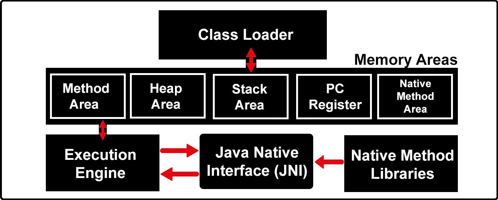
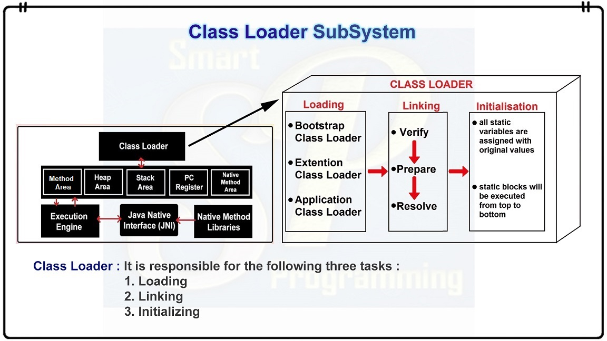
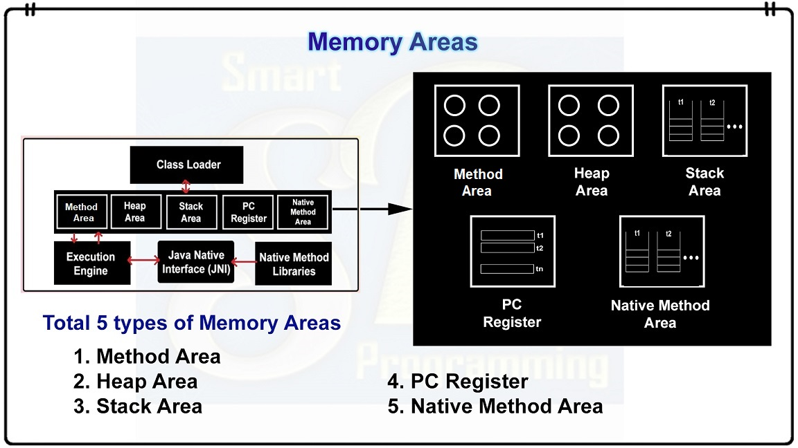
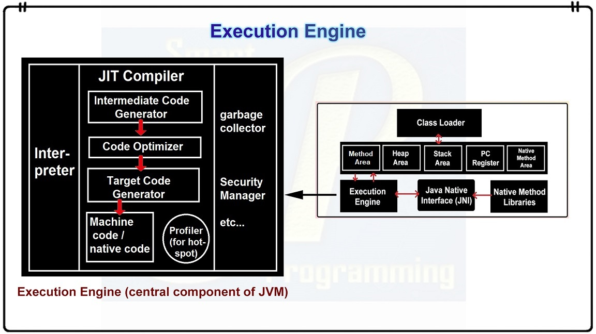

Architecture Of JVM:-
⇒ What is Virtual Machine ?
Before going for JVM, we should have knowledge of "Virtual Machine". A virtual machine is a software simulation of a machine which can perform operations similar to physical machine. Virtual machine is not physically present.
For example "Calculator", we can buy physical calculator from market having some weight, size etc, this machine is physically exists. But the calculator present in our operating system, that does not physically present but it can perform all the tasks similar to that calculator we buy from market. SO calculator present in operating system is virtual machine which is not physically present but can perform all the tasks.
A virtual machine usually known as a guest is created within another computing environment refereed as "host". Multiple virtual machine can exists within single host at one time.
Types of virtual machine :-
1. Hardware Based or System Based Virtual Machine
2. Application Based or Process Based Virtual Machine
JVM(Java Virtual Machine) is Application based virtual machine.
⇒ Java Virtual Machine Architecture :-
1. It is a Runtime Engine responsible to run java based applications.
2. It has two main tasks :-
1. load .class file
2. execute .class file
Basic Architecture of JVM is shown in following diagram :-

Thus architecture of JVM is broadly divided in three main categories :-
1. Class Loader
2. Memory Areas
3. Execution Engine
These are deeply explained below....
⇒ 1. Class Loader Architecture :-
Below is the class loader architecture in JVM.

1. Loading :-
◉ It will read .class file and store corresponding information in the method area.
◉ For each class file, JVM will store following information in the method area :
1. Fully qualified class name.
2. Fully qualified parent class name.
3. Methods information.
4. Variables information.
5. Constructors information.
6. Modifiers information.
7. Constant pool information etc...
◉ Three types of class loaders :
1. Bootstrap Class Loader : Responsible to load the classes present in rt.jar (rt.jar file is present in bootstrap classpath i.e. jdk\jre\lib)
2. Extention Class Loader : Responsible to load the classes from extention class path(i.e. jdk\jre\lib\ext\*.jar)
3. Application Class Loader : Responsible to load the classes from application classpath. It internally uses environment variable class path.
2. Linking :-
◉ In linking three activities are performed :
1. Verification :- In this process Byte Code Verifier checks whether the .class file is generated by valid compiler or not and whether .class file is properly formated or not.
If verification fails, then JVM will provide “java.lang.VerifyError” exception. Because of this process, java is secured.
2. Preparation :- In this process JVM will allocate memory for class level static variables & assign default values (not original values)
3. Resolution :- In this process symbolic names present in our program are replaced with original memory references from method area.
3. Initializing :-
◉ In this process, two activities will be performed :
1. All static variables are assigned with original values.
2. static blocks will be executed from top to bottom.
⇒ 2. Memory Areas :-
Below are the memory areas in JVM.

1. Method Area :-
◉ Method area is created when JVM is started.
◉ It stores .class file information and static variables.
◉ Per JVM one memory area, therefore multiple threads can access this area, so it is not thread safe.
2. Heap Area :-
◉ Heap area is created when JVM is started.
◉ It stores objects, instance variables and arrays (as every arrays is an object in java).
◉ It can be accessed by multiple threads, so the data stored in heap area is not thread safe.
3. Stack Area :-
◉ Whenever a new thread is created, a separate stack area will also be created.
◉ It stores the current running method and local variables.
◉ When the method is completed, the corresponding entry from the stack will be removed.
◉ After completing all method calls, the stack will become empty and that empty stack will be destroyed by thee JVM just before terminating the thread.
◉ The data stored in the stack is available only for the corresponding thread and not available to the remaining thread, so this area is thread safe.
4. PC Register Area :-
◉ It holds the address of next executing instruction.
◉ For every thread, a separate pc register is created, so it is also thread safe.
5. Native Method Stack Area :-
◉ All native method calls invoked by the thread will be stored in the corresponding native method stack.
◉ For every thread separate native method stack will be created.
◉ It is also thread safe.
⇒ 3. Execution Engine :-
Below is an architecture of execution engine in JVM.

◉ Execution Engine is responsible to execute java class file.
◉ It contains mainly two components :
1. Interpreter
2. JIT Compiler
◉ Interpreter :- A module that alternately decodes and executes every statement or line in some body of code. The Java interpreter decodes and executes bytecode for the Java virtual machine.
◉ JIT Compiler :- ● JIT stands for Just-in-Time which means that code gets compiled when it is needed, not before runtime.
● The main purpose of JIT compiler is to improve performance.
JVM maintains a count as of how many time a function is executed. If this count exceeds a predefined limit or say threshold value, the JIT compiles the code into machine language which can directly be executed by the processor (unlike the normal case in which javac compile the code into bytecode and then java - the interpreter interprets this bytecode line by line converts it into machine code and executes).
Also next time this function is calculated same compiled code is executed again unlike normal interpretation in which the code is interpreted again line by line. This makes execution faster.
● JIT compilation is applicable only for repeatedly required methods, not for every method.
⇒ 4. Java Native Interface (JNI) :-
◉ An interface that allows Java to interact with code written in another language.
◉ It acts as mediator for java method calls & the corresponding native libraries i.e. JNI is responsible to provide information about native libraries to the JVM.
◉ Native Method Library provides or holds native library information.
◉ The java command-line utility is an example of one such application, that launches Java code in a Java Virtual Machine.
⇒ Below is my youtube video link explaining "JVM Architecture In Java" :-
Click Here To See "JVM Architecture In Java (Part 1)"
Click Here To See "JVM Architecture In Java (Part 2)"